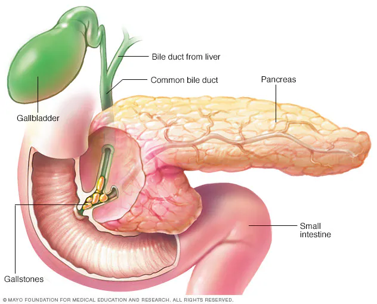

Descripción general
La pancreatitis es la inflamación del páncreas. La inflamación es una actividad del sistema inmunitario que puede causar hinchazón, dolor y cambios en el funcionamiento de un órgano o de los tejidos.
El páncreas es una glándula larga y plana que se encuentra detrás del estómago. El páncreas ayuda al cuerpo a digerir los alimentos y regula los niveles de la glucosa en la sangre.
La pancreatitis puede ser una afección aguda. Esto significa que aparece de repente y suele durar poco tiempo. La pancreatitis crónica es una afección a largo plazo. Los daños en el páncreas pueden empeorar con el tiempo.
La pancreatitis aguda puede mejorar por sí sola. Las enfermedades más graves requieren tratamiento en un hospital y pueden causar complicaciones potencialmente mortales.
Haz click en los nombres para obtener información detallada de cada una de las zonas que se muestra en la imagen
Síntomas
Los síntomas de la pancreatitis pueden variar. Los síntomas de la pancreatitis aguda pueden ser, por ejemplo, los siguientes:
- Dolor en la parte superior del abdomen.
- Dolor en la parte superior del abdomen que se extiende hacia la espalda.
- Sensibilidad al tocar el abdomen.
- Fiebre.
- Pulso acelerado.
- Malestar estomacal.
- Vómitos.
Algunos signos y síntomas de la pancreatitis crónica son los siguientes:
- Dolor en la parte superior del abdomen.
- Dolor de estómago que empeora después de comer.
- Pérdida involuntaria de peso.
- Heces grasosas y fétidas.
Algunas personas con pancreatitis crónica solo presentan síntomas después de tener complicaciones por la enfermedad.
Cuándo debes consultar con un médico
Solicita una cita con tu médico si sientes dolor abdominal repentino o dolor abdominal que no mejora. Busca atención médica inmediata si el dolor que sientes es tan intenso que no puedes quedarte sentado o encontrar una posición cómoda.
Causas
El páncreas tiene dos funciones principales. Produce insulina, que ayuda al organismo a gestionar y utilizar los azúcares.
El páncreas también produce jugos digestivos, llamados enzimas, que ayudan a la digestión. El páncreas fabrica y almacena versiones desactivadas de las enzimas. Cuando el páncreas envía las enzimas al intestino delgado, estas se activan y descomponen las proteínas en el intestino delgado.
Si las enzimas se activan demasiado pronto, pueden empezar a actuar como jugos digestivos dentro del páncreas. Esta acción puede irritar, dañar o destruir las células. Este problema, a su vez, provoca respuestas del sistema inmunitario que causan hinchazón y otros eventos que afectan al funcionamiento del páncreas.
Varios factores pueden derivar en una pancreatitis aguda, como los siguientes:
- Obstrucción del conducto biliar causada por cálculos biliares.
- Consumo excesivo de alcohol.
- El uso de ciertos medicamentos.
- Niveles altos de triglicéridos en la sangre.
- Niveles altos de calcio en la sangre.
- Cáncer de páncreas.
- Lesiones por traumatismo o cirugía.
Las afecciones que pueden derivar en una pancreatitis crónica son las siguientes:
- Daños por pancreatitis aguda repetida.
- Consumo excesivo de alcohol.
- Genes hereditarios relacionados con la pancreatitis.
- Niveles altos de triglicéridos en la sangre.
- Niveles altos de calcio en la sangre.
A veces, no se detecta la causa de la pancreatitis. Esto se conoce como pancreatitis idiopática.
Factores de riesgo
Los factores que aumentan el riesgo de pancreatitis incluyen los siguientes:
- Consumo excesivo de alcohol. Las investigaciones demuestran que consumir entre cuatro y cinco bebidas alcohólicas al día aumenta el riesgo de pancreatitis.
- Hábito de fumar. En comparación con las personas que no fuman, las que lo hacen son, en promedio, tres veces más propensas a desarrollar pancreatitis crónica. Dejar de fumar puede disminuir el riesgo.
- Obesidad. Las personas con un índice de masa corporal de 30 o más corren más riesgo de tener pancreatitis.
- Diabetes. Tener diabetes aumenta el riesgo para pancreatitis.
- Antecedentes familiares de pancreatitis. Se ha vinculado a varios genes con la pancreatitis crónica. Tener antecedentes familiares de la enfermedad está vinculado con un riesgo alto, especialmente cuando también hay otros factores de riesgo.
Complicaciones
La pancreatitis puede causar complicaciones graves, como:
- Insuficiencia renal. La pancreatitis aguda puede hacer que los riñones no filtren los desechos de la sangre. El filtrado artificial, también conocido como diálisis, puede ser necesario para tratamientos a corto o largo plazo.
- Problemas respiratorios. La pancreatitis aguda puede causar cambios en la actividad pulmonar, lo que hace que el nivel de oxígeno en la sangre baje peligrosamente.
- Infección. La pancreatitis aguda puede hacer que el páncreas esté vulnerable a infecciones. Las infecciones pancreáticas son graves y requieren tratamiento intensivo, como una cirugía u otros procedimientos para eliminar el tejido infectado.
- Seudoquiste. La pancreatitis aguda y la crónica pueden hacer que se acumulen líquido y residuos en una especie de bolsillo del páncreas, llamado seudoquiste. La rotura de un seudoquiste grande puede causar complicaciones, como infección y sangrado interno.
- Malnutrición. Tanto en el caso de la pancreatitis aguda como en la crónica, puede que el páncreas no produzca enzimas suficientes para el sistema digestivo. Esto puede derivar en malnutrición, diarrea y pérdida de peso.
- Diabetes. La diabetes puede producirse cuando la pancreatitis crónica daña las células que producen insulina.
- Cáncer de páncreas. La inflamación del páncreas por tiempo prolongado es un factor de riesgo para cáncer de páncreas.